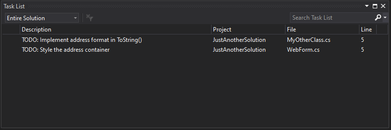
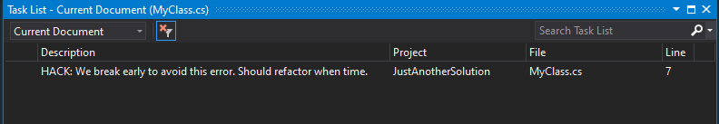
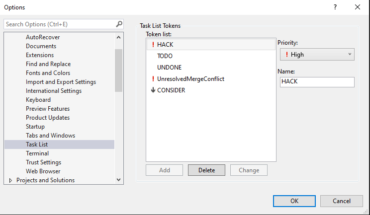

Casey McQuillan
September 16, 2020
Did You Know?
Visual Studio tracks your “// TODO” comments so you can find them later.
From within Visual Studio Go to View -> Task List. This will display the Task List window and show you any area of your open Solution that has existing comments that start with // TODO. You can filter down to your Current Project, Current Document, or Open Documents. It even will allow you to search the list.

It doesn’t just recognize // TODO, but will also recognize // HACK

What if I Don’t Use English?
You can customize the words that trigger a Task View entry in your Visual Studio options.
- Go to Tools
- Go to Options
- Expand the Environment options
- Go to Task List
- Enter any words you would like to highlight from your code comments.

How Should I Use It?
Properly leveraging the Task List window can be fantastic for your productivity. Here are a few of the ways I have personally used this window to improve my workflow.
- Leaving occasional
// TODOcomments while prototyping when the unwritten code will not change functionality. It serves as a reminder to complete the code before delivering a milestone or making a final commit. - When writing a Web API, create the first round of CRUD endpoints using fake data and add
// TODOto the top of every method. When all of the base endpoints are in there is now an easy checklist to complete. - Adding
// CONSIDERto the list of words tracked by Visual Studio and using it to keep a list of places where long-term improvements can be made to a codebase. This can be set to a lower priority so that other tracked words stand out within the list.